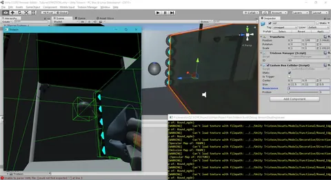
Orb
Custom C++ engine · 2017
A first-person puzzle game on our first engine. I wrote its physics engine and serialization, and turned
Unity into its level editor.
More info
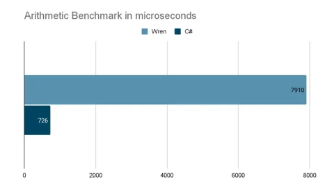
C# vs. Wren
Research · scripting for a C++ engine
A comparison of two scripting languages to embed in a C++ engine: runtime speed, compile time and the cost
of calling into C++.
More info
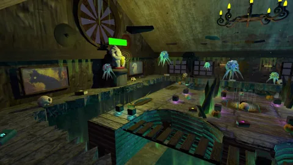
Ghostebash
VR Amsterdam · free-roaming VR · 2021 — 2022
A multiplayer ghost-hunting game for a VR arcade where groups share one real room. Sole programmer:
local multiplayer with Mirror, full-body IK and physics interactions.
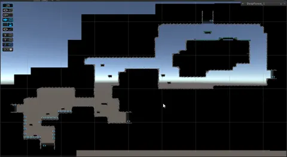
Abyss
2D Metroidvania · sole programmer · 2018 — 2019
A hand-drawn Metroidvania about a demon sealed at the bottom of an abyss. As its only programmer I built
combat, enemies, healing, parallax layers, floor-material footsteps and a depth-layer editor for the artists.
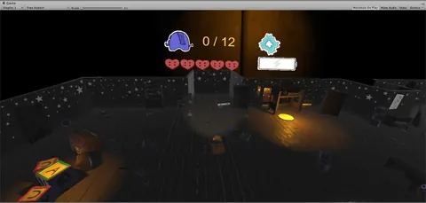
Back to Bed!
VR · 3 weeks · 2 programmers · 2016
My first VR game, made when consumer VR had just launched. VR player controller, menus, an event system and
a node-based dialogue editor for the designers.
Projects I built on my own, each focused on one area of game programming.
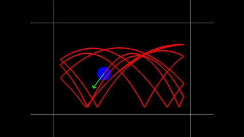
Game physics
C# · GXPEngine · 2016
A vector class written from scratch, used for a slingshot ball with gravity and wall bounces and a tank that steers and aims with vector angles.
More info
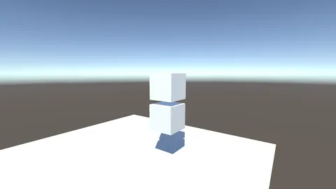
SAT collision detection
C# · Unity · 2016
Custom rigidbodies and box collisions based on the separating axis theorem, outside Unity's own physics.
More info
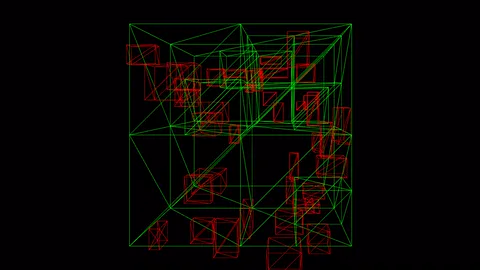
Octree
C++ · our first engine · 2017
An octree for our engine's physics that stores each collider in the smallest node containing it, rebuilt every frame and drawn with debug lines.
More info
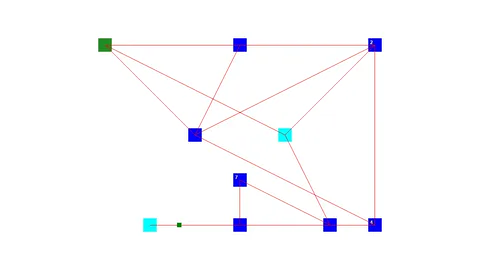
Game AI
C# · GXPEngine · 2016
A woodcutter agent driven by a finite state machine, with A* pathfinding on a node graph.
More info
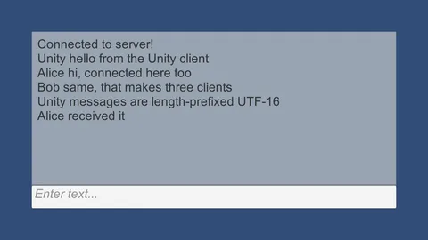
Networking
C# · Unity · 2016
A TCP chat server that relays length-prefixed messages between clients on separate threads, with a Unity client.
More info
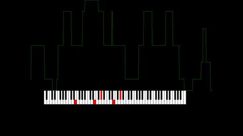
Audio programming
C# · GXPEngine · 2016
A polyphonic software synthesizer that renders MIDI files to WAV, with effect classes and waveform and keyboard views.
More info
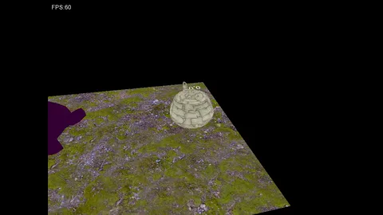
3D rendering
C++ · OpenGL · 2016
Camera code on a small OpenGL engine: a look-at transform built from three vectors and a camera that circles its target.
More info
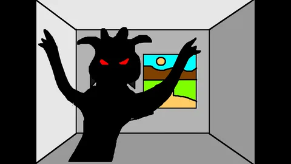
Lua scripting
C++ · Lua · 2017
A C++ host that runs a point-and-click adventure written in Lua, with C++ methods bound to the Lua state.
More info
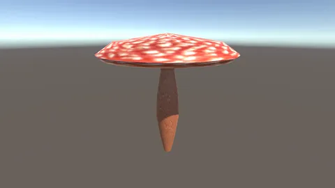
Procedural meshes
C# · Unity · 2016
Meshes generated in code: a mesh builder, a lathe that revolves a 2D profile, and a mushroom shaped from the inspector.
More info
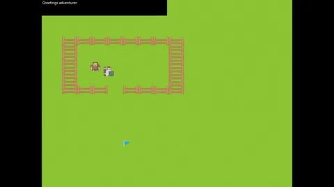
Tiled level loading
C# · GXPEngine · 2016
Levels made in Tiled (TMX) loaded into a game, with object properties for keys, doors and NPCs, plus a model-view-controller line editor.
More info
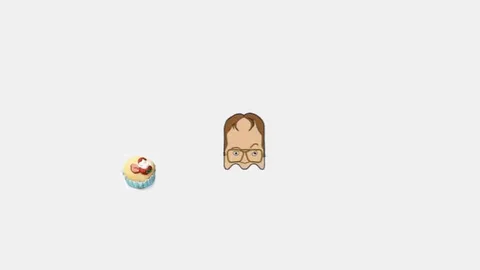
Game architecture
C# · Windows Forms · 2016
A small game loop reorganised into graphics, input and physics components that are looked up by type.
More info
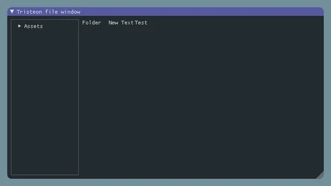
Editor research
C++ · ImGui · Vulkan · 2017
How engine editors are built: immediate versus retained mode UI, an asset browser prototype and type registration for JSON serialization, later used in Tristeon.
More info